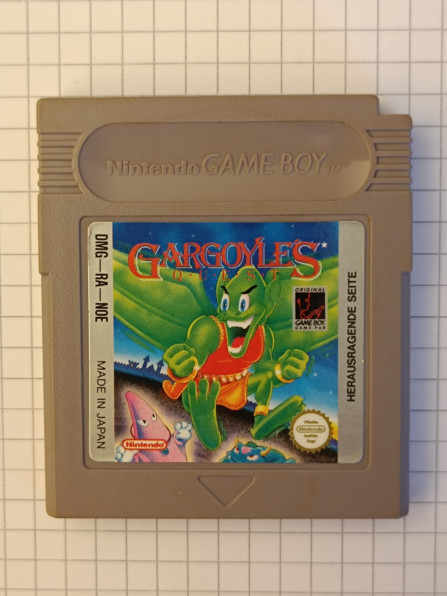

Speicherkomplexität und Kompression:
Wie können z.B. statt jedes Buchstabens in ASCII nur die individuellen Wörter speichern,
um Wiederholungen zu vermeiden. Dann haben wir Zeiger, die zu den Speicheradressen der Wörter zeigen. Also eine Reihe von Zeigern (pointers).
Unsere Pointer anstelle von Wörtern: [*0x07],[*0x0C],[*0x00], ...
Individuelle Wörter im Speicher: [0x00-0x04]="sehr" [0x04-0x07]="ist" [0x7-0x0A]="ich" [0x0A-0x0C]="du" [0x0C-0F]="bin" ...
Vorher haben wir jedes Wort n-mal mit n-Zeichen gespeichert, also eine Speicherkomplexität von O(n^2).
Jetzt speichern wir nur die Zugriffe auf ein individuelles Wort plus die individuellen Wörter,
also z.B. n*n*0,1 individuelle Wörter, wenn wir mal annehmen, dass wir bei 1000 Wörtern 100 individuelle Wörter haben.
Zeiger an sich brauchen auch Speicher. 2 Bytes damals und in C heute 4-8Byte, abhängig von der Zielarchitektur.
Man kann also von einer linearen Reduzierung der Größe der Speicheranforderung ausgehen, abhängig
vom Informationsgehalt des Originaltextes. Bei hohem Informationsgehalt wird es auf einem geringergen Faktor hinauslaufen.
Fazit:
Aus 10 A4 Seiten Text werden in unserem optimistischen Beispiel 100 Seiten A4 Text die
auf eine 32KB Speicherkarte passen und was die Programmierer des originalen Gameboy Systems
zur Verfügung hatten um ganze Spiele aufzuschreiben.
Wenn man einen realistischeren Faktor, z.b. das Mittel der Spanne 1:2-1:8 , dannt kommen wir eher auf ~50 Seiten.